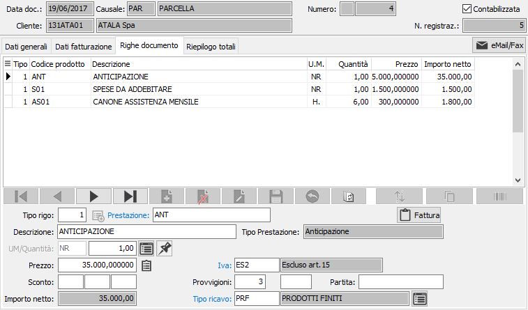
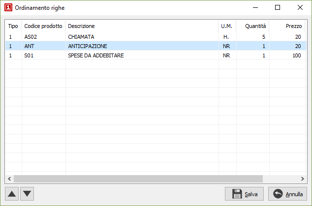

Righe documento
In questa finestra video è possibile inserire le varie righe del documento. Non tutti i campi visualizzati nell’illustrazione seguente sono necessariamente presenti nell’installazione attiva presso l’utente, dipende da quali moduli sono installati.
La maschera video è articolata su due sezioni: la sezione inferiore visualizza il pannello di input mentre la griglia della sezione superiore visualizza le righe inserite.

TIPO RIGO: codice numerico presente sulla tabella dei tipi rigo utilizzato per definire il tipo di rigo che si vuole inserire. Sul campo sono attive le funzioni di ricerca (F9). Se la fattura evade gli ordini è possibile richiamare la finestra di selezione degli ordini tramite il tasto F12.  Utilizzando il pulsante presente accanto al tipo rigo compare la finestra operativa da cui è possibile utilizzando i criteri di selezione visualizzare, tramite il pulsante Selezione, un elenco di prestazioni che è possibile inserire nel documento. Per ogni prestazione visualizzato è possibile impostare una quantità, che sarà riportata sul rigo del documento; se la quantità viene impostata a zero il rigo non sarà inserito nel documento.
Utilizzando il pulsante presente accanto al tipo rigo compare la finestra operativa da cui è possibile utilizzando i criteri di selezione visualizzare, tramite il pulsante Selezione, un elenco di prestazioni che è possibile inserire nel documento. Per ogni prestazione visualizzato è possibile impostare una quantità, che sarà riportata sul rigo del documento; se la quantità viene impostata a zero il rigo non sarà inserito nel documento.
PRESTAZIONE: campo alfanumerico per inserire il codice della prestazione, a conferma del codice vengono visualizzate la descrizione, modificabile, ed il tipo di prestazione non modificabile. Il campo è attivo solo per i tipi di rigo che ne prevedono l'accesso. Sul campo sono attive le funzioni di ricerca (F9) ed accesso rapido alla tabella (CTRL+W).
DESCRIZIONE: campo alfanumerico di 60 caratteri per descrivere il rigo. In caso di tipo rigo che preveda di trattare voci di recupero spese sul campo è attiva la ricerca sulla tabella apposita; nel caso di tipo rigo che identifichi righe descrittive, sul campo è attiva la ricerca sulla tabella dei Testi fissi documenti, che consente di acquisire testi precedentemente inseriti ed assegnati ad un codice.
NOTE: bottone che abilita un campo annotazioni, relative al rigo di documento attivo, che verranno stampate sul documento.
UNITÀ DI MISURA: campo alfanumerico di 3 caratteri, presente nella tabella Unità di misura, per descrivere l’unità di misura della prestazione. Sul campo sono attive le funzioni di ricerca (F9) ed accesso rapido alla tabella (CTRL+W). Tramite il tasto funzione F11 si può accedere alla finestra relativa al fattore di conversione.
QUANTITÀ: campo numerico per inserire la quantità per la prestazione attiva.
PREZZO: campo numerico per inserire il prezzo. Viene presentato, in automatico, il prezzo presente nell'eventuale tariffario, oppure il prezzo del listino memorizzato sul documento, oppure il prezzo presente in anagrafica prestazioni. Il prezzo proposto può essere modificato dall’utente. E' presente la funzione F12 che consente di ripristinare il prezzo originale della prestazione; la funzione CTRL+F11 che visualizza una finestra di informazioni economiche relative alla prestazione (provenienza dei prezzi, provvigioni, sconti ecc.).
SCONTI O MAGGIORAZIONI: campi, abilitati o meno in relazione al numero sconti previsto in configurazione, per inserire una percentuale di sconto o maggiorazione. Se esistenti, vengono proposte le percentuali di sconto esistenti in anagrafica clienti, in anagrafica prestazioni o in listini clienti. A conferma dell’ultimo sconto, viene visualizzato l’importo netto di rigo.
CODICE IVA: codice I.V.A. memorizzato sulla prestazione. Se il documento prevede l’esenzione Iva, viene proposto il codice di esenzione stesso. Sul campo sono attive le funzioni di ricerca (F9) ed accesso rapido alla tabella (CTRL+W).
CODICE RICAVO: codice del sottoconto memorizzato sulla prestazione. Utilizzato per la contabilizzazione del ricavo generato dal rigo di parcella derivante dal documento. Sul campo sono attive le funzioni di ricerca (F9) ed accesso rapido alla tabella (CTRL+W).
 Il pulsante consente di accedere, se attivo il modulo di contabilità analitica, alla sezione dove indicare il centro di ricavo, la voce di ricavo e la commessa, in base a quanto indicato in configurazione contabilità analitica.
Il pulsante consente di accedere, se attivo il modulo di contabilità analitica, alla sezione dove indicare il centro di ricavo, la voce di ricavo e la commessa, in base a quanto indicato in configurazione contabilità analitica.
CODICE PROGETTO: Codice alfanumerico di 15 caratteri che definisce il progetto di riferimento. Sul campo sono attive le funzioni di ricerca (F9) ed accesso diretto alla tabella (CTRL+W). Il campo è presente solo se attiva la gestione progetti e configurato il progetto sul rigo.
Nella finestra video è possibile scorrere i righi di documento, visualizzando quello attivo nel pannello di input, tramite i tasti CTRL+freccia giù e CTRL+freccia su. Un rigo di documento visualizzato nel pannello di input può essere eliminato, ancorchè privo di trattamenti successivi, premendo il bottone Elimina della barra strumenti del pannello di input; è possibile inserire un rigo vuoto immediatamente successivo al rigo attivo premendo il bottone Nuovo della barra strumenti del pannello di input.
 Tramite il pulsante Ordina è possibile modificare l'ordinamento delle righe del documento spostandole singolarmente tramite gli appositi tasti di scorrimento oppure selezionando e trascinando le singole righe. La pressione sul pulsante Salva determina la modifica effettiva dell'ordinamento.
Tramite il pulsante Ordina è possibile modificare l'ordinamento delle righe del documento spostandole singolarmente tramite gli appositi tasti di scorrimento oppure selezionando e trascinando le singole righe. La pressione sul pulsante Salva determina la modifica effettiva dell'ordinamento.

 Tramite il pulsante Copia è possibile inserire nel documento righe estratte da altri documenti, uguali o di altro tipo, i parametri vengono proposti in base alla Configurazione copia righe documenti.
Tramite il pulsante Copia è possibile inserire nel documento righe estratte da altri documenti, uguali o di altro tipo, i parametri vengono proposti in base alla Configurazione copia righe documenti.

La finestra permette di specificare diversi criteri di selezione, tra cui il tipo di documento, l'anno, la causale, il numero, il cliente e l'eventuale periodo di analisi; è comunque necessario premere il pulsante Seleziona che visualizzerà nella griglia sottostante l'elenco dei documenti coerenti con i parametri di selezione richiesti. Premendo il pulsante Dettaglio vengono visualizzate le righe del documento selezionato. è presente il pulsante "Cambia ditta" che consente di selezionare un'altra azienda da cui copiare i dati; quando l'azienda è diversa dalla corrente il pulsante appare col testo evidenziato e sotto viene mostrato il nome dell'azienda.

In questa sezione è possibile selezionare le righe da inserire nel documento attivo spuntando le caselle relative, oppure utilizzando il menù abbinato al tasto destro del mouse, che prevede le voci seleziona tutto e deseleziona tutto. Premendo il pulsante Copia le righe selezionate vengono inserite nel documento attivo. Al momento della copia sarà visualizzato un pannello con le opzioni di copia: assegnare prezzo/sconti, assegnare descrizione e unità di misura del prodotto, assegnare il magazzino, assegnare i conti; se le opzioni sono spuntate verranno effettuate le assegnazioni in base ai dati del nuovo documento, altrimenti rimarranno i valori originali del documento da cui si sta copiando.

 Se attiva la gestione dei riferimenti, attraverso il parametro “Gestione riferimenti su documenti” presente nella configurazione “Standard – Ciclo attivo” nella configurazione del modulo standard, è presente sul rigo del documento il bottone per accedere ai dati relativi al riferimento; la pressione del pulsante visualizza la finestra a lato dove è possibile indicare relativamente al rigo documento, una tipologia di riferimento gestita tramite la tabella Tipologie riferimenti documenti, ed un campo descrittivo; entrambi vengono trasferiti da un documento all’altro in fase di evasione e di copia documenti. Attraverso l’utilizzo di questo meccanismo si possono anche gestire le fatture elettroniche da inviare al MIUR per il rimborso dei voucher tipo 18App oppure Carta del docente.
Se attiva la gestione dei riferimenti, attraverso il parametro “Gestione riferimenti su documenti” presente nella configurazione “Standard – Ciclo attivo” nella configurazione del modulo standard, è presente sul rigo del documento il bottone per accedere ai dati relativi al riferimento; la pressione del pulsante visualizza la finestra a lato dove è possibile indicare relativamente al rigo documento, una tipologia di riferimento gestita tramite la tabella Tipologie riferimenti documenti, ed un campo descrittivo; entrambi vengono trasferiti da un documento all’altro in fase di evasione e di copia documenti. Attraverso l’utilizzo di questo meccanismo si possono anche gestire le fatture elettroniche da inviare al MIUR per il rimborso dei voucher tipo 18App oppure Carta del docente.

 Se attiva la gestione dei listini di rigo, configurabile tramite l’omonimo parametro in configurazione “Standard - ciclo attivo”, è presente, accanto al campo prezzo, il pulsante mostrato a sinistra che può essere utilizzato per riassegnare il listino al rigo corrente; si apre la finestra mostrata a destra dove indicare il nuovo codice listino; sul campo è attivo lo zoom (F9) che visualizza tutti i listini di tipo prezzi e il tasto funzione F11 che visualizza solo i listini validi per il prodotto; la pressione del pulsante Salva comporta la riassegnazione del prezzo e relativo ricalcolo degli importi del rigo. Il codice del listino è sempre presente sul rigo del documento, se non è gestito il listino di rigo viene assegnato comunque uguale al listino di testa al salvataggio finale del documento. In fase di evasione documento il codice listino, come il prezzo, viene preso dal documento di origine.
Se attiva la gestione dei listini di rigo, configurabile tramite l’omonimo parametro in configurazione “Standard - ciclo attivo”, è presente, accanto al campo prezzo, il pulsante mostrato a sinistra che può essere utilizzato per riassegnare il listino al rigo corrente; si apre la finestra mostrata a destra dove indicare il nuovo codice listino; sul campo è attivo lo zoom (F9) che visualizza tutti i listini di tipo prezzi e il tasto funzione F11 che visualizza solo i listini validi per il prodotto; la pressione del pulsante Salva comporta la riassegnazione del prezzo e relativo ricalcolo degli importi del rigo. Il codice del listino è sempre presente sul rigo del documento, se non è gestito il listino di rigo viene assegnato comunque uguale al listino di testa al salvataggio finale del documento. In fase di evasione documento il codice listino, come il prezzo, viene preso dal documento di origine.